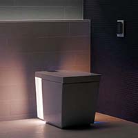

Kohler K-3901 Next Generation Numi
Kohler K-3901 Next Generation Numi
Description
The Numi by Kohler offers greater design, features, and style than any other toilet on the market. The Numi is the most advanced toilet, and is now even more advanced. Upgrades include enhanced personalized settings that let you fine-tune every option to your exact preference, from ambient colored lighting to Bluetooth music sync settings, down to the heated seat and foot warmer. Another upgrade is the addition of an emergency flush capability during power outages. From its striking form to its exceptional water efficiency, the Numi toilet marks a new standard of excellence in the bathroom.
In Stock
Price $5000.00
Customer Reviews
This thing really looks cool - a piece of modern, functional art for the bathroom, helping to gussy up the look of an otherwise all-too-utilitarian/banal little room. Its lighting feature is beautiful, and the fact that it can play music from so many different sources is great for listening while getting ready. Its basic functions are quiet and unobtrusive.